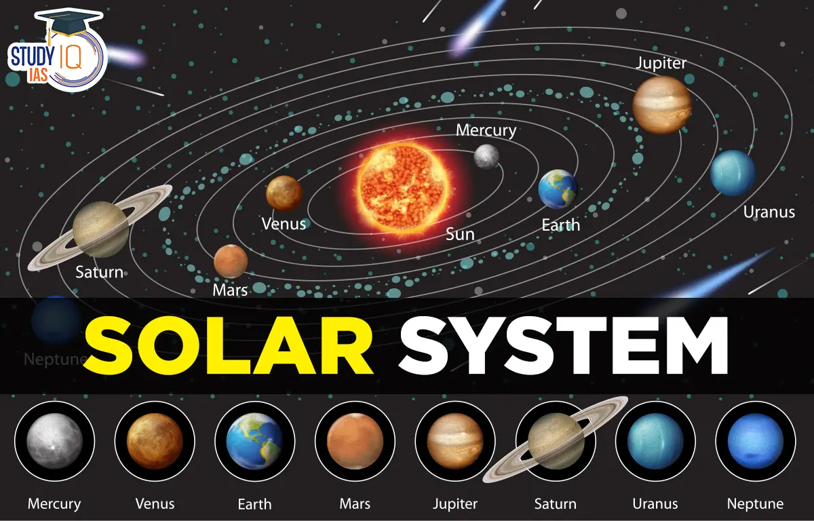

SOLAR SYSTEM
The Solar System[c] is the gravitationally bound system of the Sun and the objects that orbit it.The largest of such objects are the eight planets, in order from the Sun: four terrestrial planets, named Mercury, Venus, Earth and Mars; and four giant planets, including two gas giants, Jupiter and Saturn, and two ice giants, named Uranus and Neptune. The terrestrial planets have a definite surface and are mostlmade of rock and metal. The gas giants are mostly made of hydrogen and helium, while the ice giants are mostly made of volatile substances such as water, ammonia, and methane. In some texts, these terrestrial and giant planets are called the inner Solar System and outer Solar System planets respectively.
Types Of Planets
MERCURY
The smallest planet in our solar system and nearest to the Sun, Mercury is only slightly larger than Earth's Moon.
From the surface of Mercury,the Sun would appear more than three times as large as it does when viewed from Earth,
and the sunlight would be as much as seven times brighter. Despite its proximity to the Sun, Mercury is not the
hottest planet in our solar system – that title belongs to nearby Venus, thanks to its dense atmosphere
VENUS
Venus is the second planet from the Sun and is Earth’s closest planetary neighbor. It’s one of the four inner,
terrestrial (or rocky) planets, and it’s often called Earth’s twin because it’s similar in size and density.
These are not identical twins, however – there are radical differences between the two worlds.Venus has crushing
air pressure at its surface – more than 90 times that of Earth – similar to the pressure you'd encounter a mile
below the ocean on Earth.
EARTH
Earth is the third planet from the Sun and the only astronomical object known to harbor life. This is enabled by
Earth being a water world, the only one in the Solar System sustaining liquid surface water. Almost all of Earth's
water is contained in its global ocean, covering 70.8% of Earth's surface. The remaining 29.2% of Earth's surface
is land, most of which is located in the form of continental landmasses within one hemisphere, Earth's land hemisphere.
MARS
Mars is the fourth planet and the furthest terrestrial planet from the Sun. The reddish color of its surface is
due to finely grained iron(III) oxide dust in the soil, giving it the nickname "the Red Planet".[21][22] Mars's
radius is second smallest among the planets in the Solar System at 3,389.5 km (2,106 mi). The Martian dichotomy
is visible on the surface: on average, the terrain on Mars's northern hemisphere is flatter and lower than
its southern hemisphere.

JUPITER
Jupiter has a long history of surprising scientists – all the way back to 1610 when Galileo Galilei found the firs
t moons beyond Earth. That discovery changed the way we see the universe.Fifth in line from the Sun, Jupiter is,
by far, the largest planet in the solar system – more than twice as massive as all the other planets combined.
Jupiter’s iconic Great Red Spot is a giant storm bigger than Earth that has raged for hundreds of years.

SATURN
Saturn is the sixth planet from the Sun and the second-largest planet in our solar system.Adorned with thousands
of beautiful ringlets, Saturn is unique among the planets. It is not the only planet to have rings – made of chunks
of ice and rock – but none are as spectacular or as complicated as Saturn's.Like fellow gas giant Jupiter,
Saturn is a massive ball made mostly of hydrogen and helium.
URANUS
Uranus is the seventh planet from the Sun, and has the third-largest diameter in our solar system. It was the
first planet found with the aid of a telescope, Uranus was discovered in 1781 by astronomer William Herschel,
although he originally thought it was either a comet or a star.It was two years later that the object was
universally accepted as a new planet, in part because of observations by astronomer Johann Elert Bode.

NEPTUNE
Dark, cold, and whipped by supersonic winds, ice giant Neptune is the eighth and most distant planet in our
solar system.More than 30 times as far from the Sun as Earth, Neptune is the only planet in our solar system
not visible to the naked eye and the first predicted by mathematics before its discovery. In 2011 Neptune
completed its first 165-year orbit since its discovery in 1846.